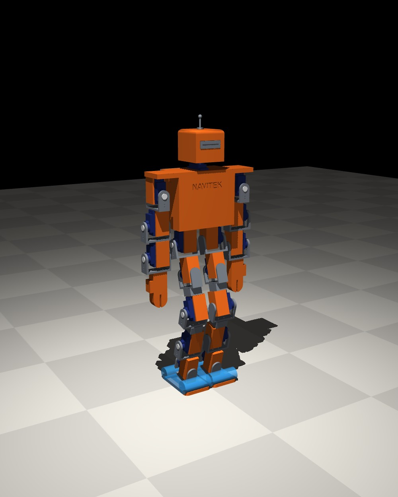
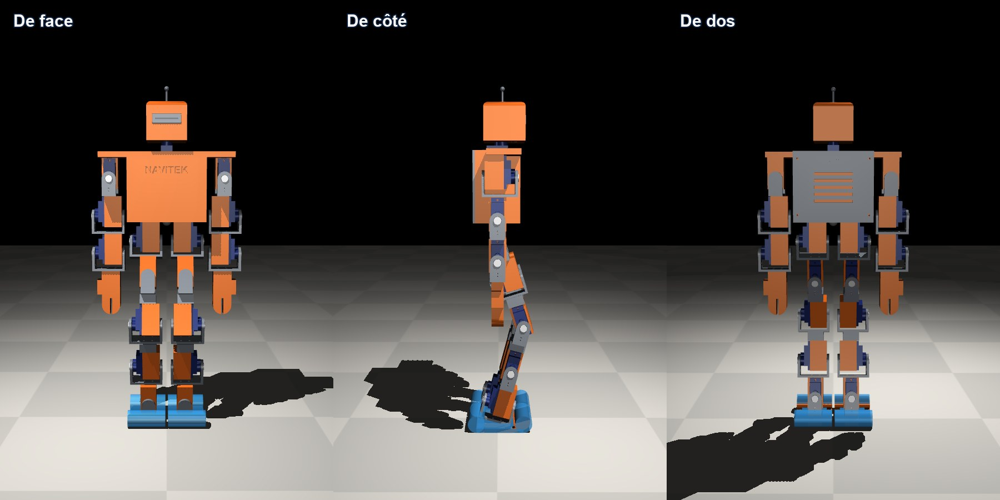
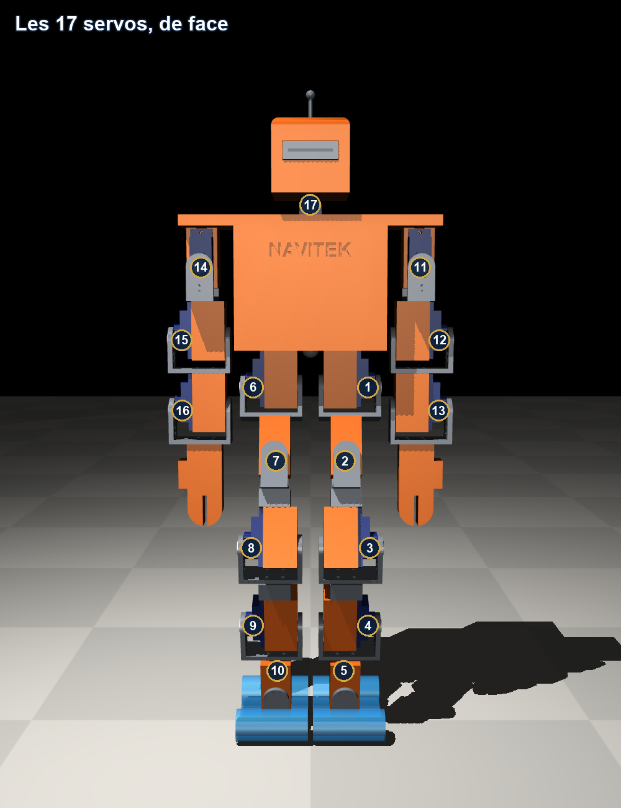

Navitek Robolabs · le robot · prototype N0.1

N0.1, l'humanoïde à imprimer
37,1 cm, 679 g, dix-sept servos SG90 de 9 g. Un corps imprimé en PLA sur une imprimante de 220 × 220 mm, un Raspberry Pi Pico 2 W et quatre piles AA. En simulation, il marche jusqu'à 20 cm/s.
Le prototype, simulé : pas encore imprimé ni monté. Les images sont rendues du modèle de la simulation (les pièces de la CAO, les servos, la semelle arrondie). Ce qui reste à faire avant d'imprimer est écrit plus bas.
Le robot, en trois vues

En 3D, pièce par pièce
Ses 17 servos

| N° | Où, et ce qu'il fait | Débattement |
|---|---|---|
| 1 | Jambe gauchela hanche, vers l'avant | -60 à 60° |
| 2 | Jambe gauchela hanche, sur le côté | -30 à 30° |
| 3 | Jambe gauchele genou | -10 à 90° |
| 4 | Jambe gauchela cheville, vers l'avant | -60 à 60° |
| 5 | Jambe gauchela cheville, sur le côté | -60 à 60° |
| 6 | Jambe droitela hanche, vers l'avant | -60 à 60° |
| 7 | Jambe droitela hanche, sur le côté | -30 à 30° |
| 8 | Jambe droitele genou | -10 à 90° |
| 9 | Jambe droitela cheville, vers l'avant | -60 à 60° |
| 10 | Jambe droitela cheville, sur le côté | -60 à 60° |
| 11 | Bras gauchel'épaule, sur le côté (les bras en avion) | -60 à 60° |
| 12 | Bras gauchel'épaule, vers l'avant | -60 à 60° |
| 13 | Bras gauchele coude | -60 à 60° |
| 14 | Bras droitel'épaule, sur le côté (les bras en avion) | -60 à 60° |
| 15 | Bras droitel'épaule, vers l'avant | -60 à 60° |
| 16 | Bras droitele coude | -60 à 60° |
| 17 | Têtele cou | -80 à 80° |
Cinq servos par jambe (la hanche en deux servos croisés : vers l'avant puis sur le côté ; le genou ; la cheville en deux), trois par bras (l'épaule en deux servos croisés : sur le côté, « les bras en avion », puis vers l'avant ; le coude), un au cou. Les débattements sont ceux du modèle de la simulation.
Ce qui change depuis N0
| N0 | N0.1 | |
|---|---|---|
| La hanche | un servo (vers l'avant) | deux servos croisés : vers l'avant, puis sur le côté |
| L'épaule | un servo (vers l'avant) | deux servos croisés : sur le côté, puis vers l'avant |
| Les servos | 13 (MG90S aux jambes, SG90 ailleurs) | 17 SG90 de 9 g, aucun MG90S |
| La semelle | plate | arrondie au talon et à la pointe (9 mm de rayon), attachée à 15° (dans la simulation) |
| Hauteur, masse | 33,1 cm, 597 g | 37,1 cm, 679 g (les piles, le Pico, les fils et les vis compris) |
La page de N0, la version 0 : /navitek/n0/.
À acheter
- 17 servos SG90 (9 g)Les dix-sept articulations. Un ou deux de rechange : le premier sert au gabarit d'essai.
- 1 Raspberry Pi Pico 2 WIl pilote les servos, une broche chacun ; le Wi-Fi servira à le commander du téléphone. Ses broches GP0 à GP15 donnent 16 signaux PWM indépendants ; le 17e servo (le cou) prend GP16 par une machine PIO du Pico, sans pièce de plus (à vérifier au montage ; le programme de N0.1 reste à écrire).
- 4 piles AA NiMH et un boîtier 2 × 2 avec interrupteur4,8 V, la tension des servos, sans régulateur, comme N0. Des NiMH seulement, jamais des alcalines (trop de tension pour le Pico et les servos). Le boîtier va dans le bas du torse ; il n'est pas encore dessiné.
- 1 diode Schottky, 1 condensateur, une plaque à trous, du filUne 1N5817 pour alimenter le Pico par VSYS ; un condensateur de 1000 µF (16 V) sur l'alimentation des servos ; une petite plaque à trous avec 17 rangées de 3 broches mâles, où se branchent les servos ; 6 rallonges de servo de 15 cm pour les genoux et les chevilles, comme N0 (à vérifier au montage).
- Des vis M2 autotaraudeusesN0 en demandait 72 (40 de 6 mm, 16 de 16 mm, 8 de 10 mm, 4 de 8 mm, 4 de 5 mm) ; chaque articulation de plus de N0.1 (les deux hanches et les deux épaules) en ajoute 4 de 6 mm, le carré de son boîtier : environ 88 (une estimation : le compte exact sera tiré de la CAO). Les vis des servos et des palonniers sont dans le sac des servos.
- Du PLA, 305 gEnviron 227 g d'orange et 78 g de gris (les six plateaux ; le plateau d'essai en plus).
Les pièces à imprimer
46 pièces, tranchées pour une Ender-3 V3 SE en PLA (OrcaSlicer) : les pièces qui portent un servo ou une vis avec le réglage « structure » (4 parois, plus lent), les autres avec « coque » (3 parois, 25 % de remplissage gyroïde, couche de 0,2 mm, sans support).
| La pièce | Nombre | Taille | Chacune | Chacune |
|---|---|---|---|---|
| Gabarit d'essaià imprimer en premier, pour essayer un vrai servo | 1 | 41 × 46 × 7 mm | 16 min | 3,2 g |
| Boîtier de servotient un servo ; son dos porte le carré de 4 vis de l'articulation suivante | 16 | 34 × 17 × 19 mm | 28 min | 6,5 g |
| Étriertourne avec le servo : un bras sur le palonnier, l'autre sur le pivot imprimé | 16 | 35 × 15 × 26 mm | 24 min | 3,3 g |
| Rallongeallonge la cuisse et le tibia | 4 | 18 × 17 × 10 mm | 14 min | 3,0 g |
| Visièreentre dans sa fente, sur le devant de la tête | 1 | 9 × 29 × 3 mm | 4 min | 1,0 g |
| Antenneferme le trou du tournevis, sur le dessus de la tête | 1 | 8 × 8 × 21 mm | 5 min | 0,5 g |
| Torseporte les hanches, les épaules, le cou, le Pico et les piles | 1 | 74 × 144 × 46 mm | 3 h 02 | 62,8 g |
| Têtese visse sur le palonnier du servo du cou | 1 | 44 × 42 × 40 mm | 1 h 24 | 27,1 g |
| Mainse visse sur l'étrier du coude | 2 | 48 × 25 × 12 mm | 22 min | 7,2 g |
| Pied gauchese visse sous l'étrier de la cheville (encore plat : la semelle arrondie reste à dessiner) | 1 | 68 × 40 × 4 mm | 24 min | 8,6 g |
| Pied droitse visse sous l'étrier de la cheville (encore plat : la semelle arrondie reste à dessiner) | 1 | 68 × 40 × 4 mm | 23 min | 8,5 g |
| Dosferme le torse par 4 vis | 1 | 74 × 84 × 2 mm | 35 min | 13,6 g |
Les six plateaux, dans l'ordre
| Le plateau | Couleur | Temps | PLA | Réglage |
|---|---|---|---|---|
| P0-gabaritle gabarit d'essai, avant tout le reste | orange | 16 min | 3,2 g | structure |
| P1-boitiersles 16 boîtiers de servo | orange | 7 h 31 | 102,8 g | structure |
| P2-etriersétriers, rallonges, visière, antenne | gris | 5 h 47 | 64,7 g | structure |
| P3-torsele torse, couché sur la poitrine | orange | 3 h 02 | 62,8 g | coque |
| P4-tete-mains-piedstête, mains, pieds | orange | 2 h 56 | 58,0 g | coque |
| P5-dosla plaque du dos | gris | 35 min | 13,6 g | coque |
En tout : 20 h 07 et 305 g. Avant les boîtiers, le plateau d'essai des étriers (1 h 05, 13 g) : deux étriers debout et deux couchés, à casser, pour choisir le sens d'impression le plus solide.
Comment le fabriquer
- Imprimer le gabarit (P0, 16 min) et y essayer un SG90. Le servo doit entrer dans la poche sans forcer, ses deux vis doivent mordre.
Sinon, corriger les cotes du servo en tête de la CAO (
n0.py) et réimprimer le gabarit avant tout le reste. - Imprimer le plateau d'essai des étriers et les casser : il dit dans quel sens les étriers résistent le mieux.
- Imprimer les plateaux P1 à P5 (les boîtiers, les étriers et les rallonges, le torse, la tête, les mains et les pieds, le dos).
- Mettre chaque servo au neutre avant de le visser : branché seul sur le Pico, le programme d'étalonnage le place au milieu de sa course (celui de N0 sert tel quel), puis on pose le palonnier.
- Monter chaque jambe du pied vers la hanche : le pied sur l'étrier de la cheville sur le côté (5, 10), la cheville vers l'avant (4, 9), le genou (3, 8) avec sa rallonge, la hanche sur le côté (2, 7), puis la hanche vers l'avant (1, 6), qui se visse au bas du torse.
- Monter chaque bras de la main vers l'épaule : la main sur l'étrier du coude (13, 16), l'épaule vers l'avant (12, 15), puis l'épaule sur le côté (11, 14), qui se visse au torse.
- La tête sur le servo du cou (17), la visière dans sa fente, l'antenne sur le trou du tournevis.
- Le câblage (ci-dessous), puis le dos, par ses 4 vis.
- Le premier allumage, suspendu : tous les servos au neutre, le robot tenu au-dessus de la table, puis posé debout.
Le câblage
Chaque servo a trois fils : brun pour la masse, rouge pour le +, orange pour le signal. Les fils rouges et bruns vont aux deux rails de la plaque ; chaque fil orange va à sa broche du Pico. Le + des servos ne passe jamais par le Pico : il part des piles. La masse est commune : le rail brun est relié à une masse du Pico. La diode alimente le Pico par VSYS quand il marche seul, et empêche l'USB et les piles de se battre. Le détail de N0, qui vaut pour N0.1 : le câblage de N0.
Le plan des broches (proposé)
| N° | Le servo | Broche | Patte | Le signal |
|---|---|---|---|---|
| 1 | Jambe gauche : la hanche, vers l'avant | GP0 | 1 | PWM |
| 2 | Jambe gauche : la hanche, sur le côté | GP1 | 2 | PWM |
| 3 | Jambe gauche : le genou | GP2 | 4 | PWM |
| 4 | Jambe gauche : la cheville, vers l'avant | GP3 | 5 | PWM |
| 5 | Jambe gauche : la cheville, sur le côté | GP4 | 6 | PWM |
| 6 | Jambe droite : la hanche, vers l'avant | GP5 | 7 | PWM |
| 7 | Jambe droite : la hanche, sur le côté | GP6 | 9 | PWM |
| 8 | Jambe droite : le genou | GP7 | 10 | PWM |
| 9 | Jambe droite : la cheville, vers l'avant | GP8 | 11 | PWM |
| 10 | Jambe droite : la cheville, sur le côté | GP9 | 12 | PWM |
| 11 | Bras gauche : l'épaule, sur le côté (les bras en avion) | GP10 | 14 | PWM |
| 12 | Bras gauche : l'épaule, vers l'avant | GP11 | 15 | PWM |
| 13 | Bras gauche : le coude | GP12 | 16 | PWM |
| 14 | Bras droite : l'épaule, sur le côté (les bras en avion) | GP13 | 17 | PWM |
| 15 | Bras droite : l'épaule, vers l'avant | GP14 | 19 | PWM |
| 16 | Bras droite : le coude | GP15 | 20 | PWM |
| 17 | Tête : le cou | GP16 | 21 | PIO (une machine d'état du Pico) |
Ce qu'il fait, en simulation
Dans MuJoCo, aux couples réels des SG90, avec ses 679 g : la marche la plus proche de la cible (L20c-elan, score 0,95) pose le talon jambe tendue, 44° entre les jambes, à la vitesse demandée ; la plus rapide (L21c) va à 1,03 fois la vitesse demandée à 20 cm/s, ses servos sous 8 rad/s (un SG90 en charge : 8,8). Les essais, les films et les erreurs : la thèse ; le modèle de marche et le robot pour MuJoCo : les téléchargements.
Avant d'imprimer : ce qui reste à faire
- La semelle arrondie dans la CAO. Elle existe dans la simulation (le talon et la pointe en cylindres de 9 mm, attachée à 15°) ; les pieds des fichiers sont encore plats, et il faut une cale d'environ 2,5 mm sous le bloc de la cheville.
- Le programme de N0.1 (17 servos, le 17e par une machine PIO) et le schéma électrique : à écrire ; ceux de N0 servent de base.
- Le boîtier des piles, à dessiner dans le bas du torse.
- Un vrai SG90 sur le gabarit : la première mesure, avant tout le reste.
Les fichiers
Licences ouvertes : CC BY 4.0 pour les pièces et les plans, MIT pour le code.
Une question, une pièce qui ne va pas, une photo de votre impression : yoan@ymiaconseil.com.